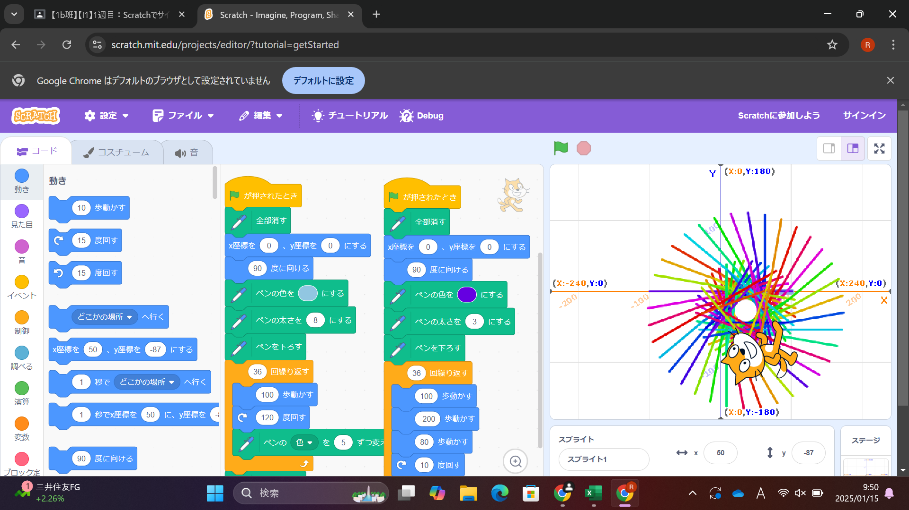

1-1 サイエンスアート

1.内容
スクラッチを使って線を書くプログラムを作成した。対象のキャラクターを移動させ、「ペン機能をつかって」その軌跡に線を表示してさまざまな幾何学模様を作成した。
幾つものプログラミングを反復動作させて一つの幾何学アートを作成した。
2.感想
小学校や中学校の時も何度かスクラッチを体験する機会はあったが、今回の授業のような発展的なプログラミングをしたことはなかったのでとても興味深かった。
以前はプログラミングに少し苦手意識があったが、今回の授業を通してとても興味をもつことができた。